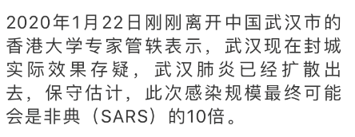
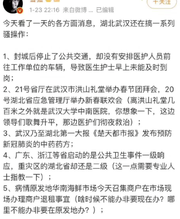

Preamble
初始页
视听资料
中文资料整合
前言
少儿贫道-民间纪事
民间纪事(2)
民间纪事(3)
民间纪事(4)
民间纪事(5)
时间线
次生灾难与思考
别叫我英雄，受之有愧
发哨子的人
网络暴力下的方方日记
北岛关闭评论,白睿文微博沦陷
崔永元-给方方上一课
崔永元日记2020年4月22日
铁幕下的孤独个体
英语世界资料
声明
谴责的声音
中国的切尔诺贝利时刻
温和派
冠状病毒后的世界
HK的衰落
时间线
为自由而死
Published with GitBook
民间纪事(2)
这是一份重要的民间纪事。(2)
1.20
1.21
1.22
1.23
1.24除夕夜
这是一份重要的民间纪事。(2)
本文来源：微信公众号-少儿贫道。
文章地址
1.20
1.21
女演员带病表演，传递正能量
1.22

1.23

1.24除夕夜
results matching "
"
No results matching "
"